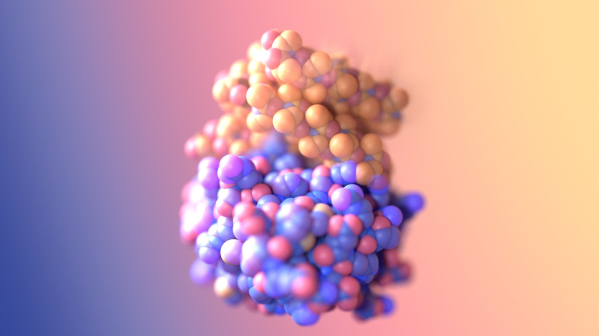
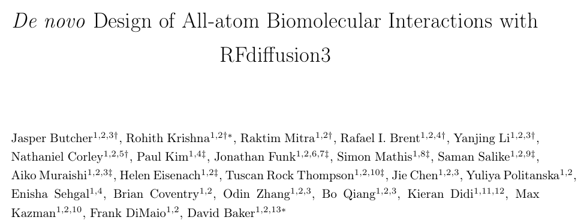
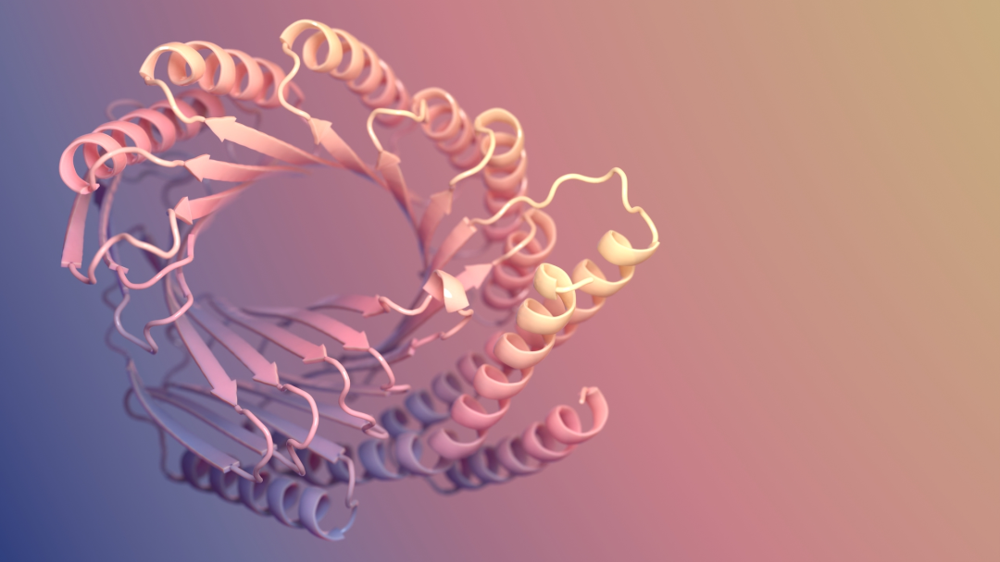
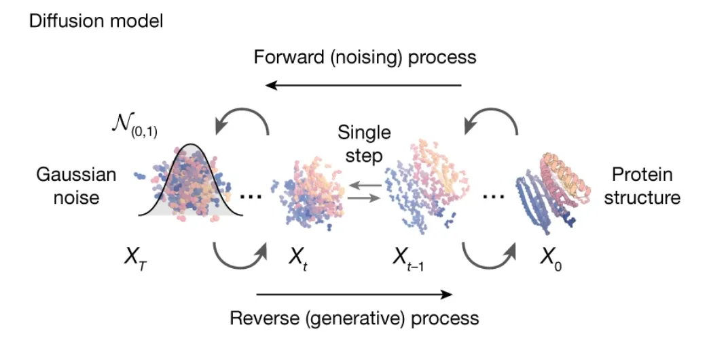
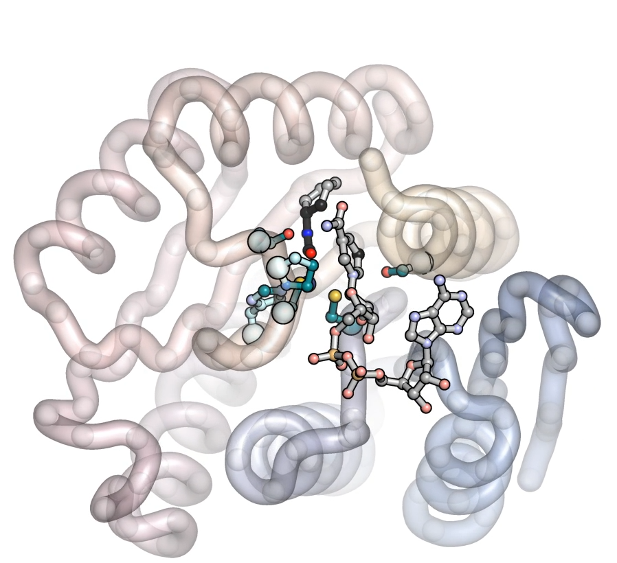
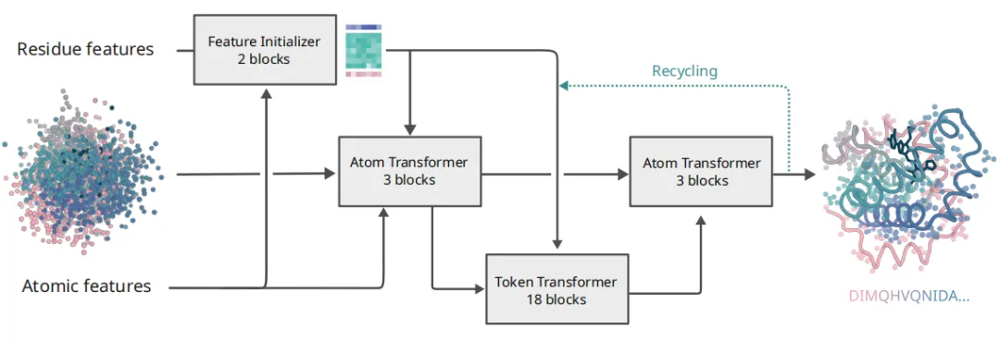
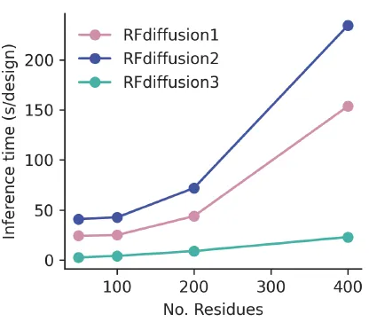
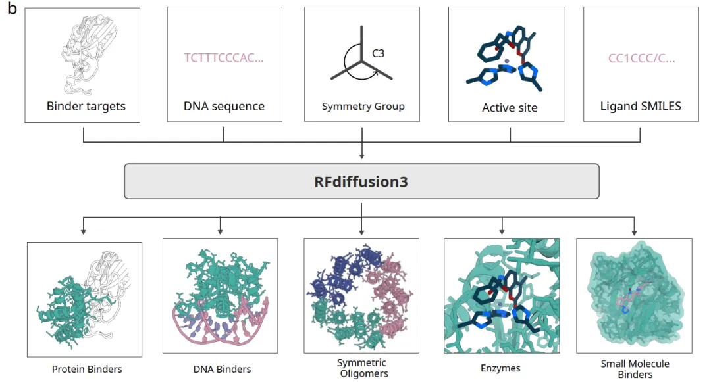
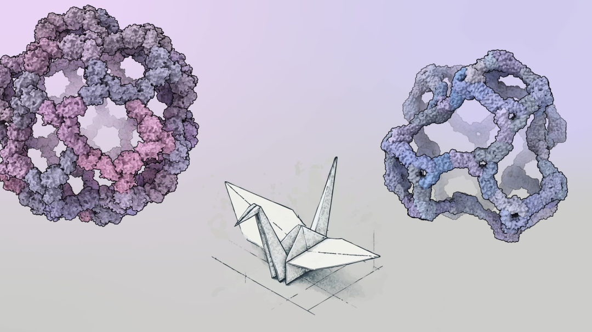

From Sketch to Hologram: David Baker's RFdiffusion Trilogy
Contents
"In only two years, RFdiffusion went from the residue-level RFD1 to the atom-level resolution of RFD3, like an artist moving from a pencil sketch of outlines to a scientist rendering atomic detail with light and shadow. Every stroke of protein design is starting to touch reality."

On September 18, 2025, David Baker's group posted RFdiffusion3 (RFD3) on bioRxiv: the first diffusion model capable of all-atom de novo design of molecular interactions.

Original paper: De novo Design of All-atom Biomolecular Interactions with RFdiffusion3.
The last five years of protein design have moved at the pace of an industrial revolution, and each new generation of tools reshapes how we read the protein landscape. The RFdiffusion series in particular has carried generative AI into structural biology and is changing how we imagine designing new molecules of life. This post follows the three generations and the paradigm shift they represent.
01 — RFdiffusion1: from hallucination to controllable generation
On July 11, 2023, the Baker lab published De novo design of protein structure and function with RFdiffusion in Nature, introducing the RoseTTAFold Diffusion (RFdiffusion) system. It turned RoseTTAFold2 into a diffusion-based backbone generator, producing protein structure in three dimensions by adding noise and then denoising. After several denoising rounds, amino acids deform into complex shapes carrying features of real proteins, α-helices and β-sheets among them.


"Anyone who has worked on computer vision will find this familiar: it is the DALL-E recipe for image generation, with polypeptide chains in place of pixels."
Before RFdiffusion, design relied on hallucination and inpainting. The first creates random amino acids and optimises them with an AI model; the second takes a motif and builds the rest around it. Both lack precision.
RFD1's breakthrough was to go beyond the blurriness of those early hallucination methods and generate precise backbones under user-specified topology or interface constraints. Combined with ProteinMPNN for fast inverse folding and AlphaFold2 for scoring and ranking, the pipeline's success rate rose by two orders of magnitude: from tens of thousands of screens to a few hundred designs for a high-affinity binder.
That made it possible to generate proteins that resemble real ones but have never existed in nature, and it marked a watershed. Protein design moved from inefficient, experience-driven work to a scalable pipeline. Many early breakthroughs, including the SARS-CoV-2 and PD-1/PD-L1 inhibitor designs, were done in the RFD1 framework.
02 — RFdiffusion2: atomic-level side-chain constraints
RFD1 could generate new folds and binding interfaces, but it was weaker at more complex functional design, such as precise chemical interactions, and its resolution stayed at the residue level.

In April 2025 the Baker lab released RFdiffusion2 (RFD2), which keeps the residue-precision diffusion model and adds conditional constraints on key side-chain atoms. You can specify the critical residues of a catalytic site, or particular atoms in a ligand-binding pocket. The model keeps global conformational plausibility while giving precise local control, which the authors call "point control". RFD2 still cannot freely construct every side chain the way an all-atom model could, but it broke ground on small-molecule binding and catalytic residue placement.
In short, RFD2 took RFD1's ability to generate plausible structures to the point of interactions that actually work, opening the era of atomically precise protein design.
03 — RFdiffusion3: all-atom diffusion and heterogeneous systems
On September 18, 2025, only five months later, the Baker team released RFdiffusion3 (RFD3), completing the jump in modelling resolution: it abandons residue-level coarse graining and diffuses directly at the atomic level. Backbone, side chains, every atom position can be modelled and controlled during denoising.
RFD3 uses a unified atomic representation: each residue is represented as 14 atoms (4 backbone and 10 side-chain atoms). For residues with small side chains, such as glycine, virtual atoms fill the gap so that every residue has the same representation. This uniformity lets the model learn structure generation without depending on amino acid identity.

Architecturally RFD3 is a Transformer U-Net with three parts:
- A downsampling module that encodes noisy atomic coordinates together with residue-level features.
- A sparse transformer that processes tokenised information through sparse attention, letting only spatially neighbouring atoms and residues attend to each other, which improves efficiency and fights overfitting.
- An upsampling module that fuses fine atomic features with coarse residue features to predict the denoised coordinate update.

The simplification also buys computational efficiency. By removing AlphaFold3's compute-heavy 48-layer Pairformer and triangle attention, RFD3 drops to 168 million parameters, roughly half of AlphaFold3, and infers about ten times faster than RFdiffusion2, which makes large-scale screening and rapid iteration practical.
"RFdiffusion3 has not released its source yet, so the technical details are still guesswork. Knowing the Baker lab, the code will not be far behind. Interestingly, RFD3 swapped RoseTTAFold-All-Atom for AlphaFold3, so some of the performance gain may come from the change of predictor."
04 — The functional leap: designing all biomolecules

The functional advances are several.
First, atomic precision. Researchers can specify hydrogen-bond donors and acceptors, solvent-accessible surface area, ligand burial and similar atomic-level constraints, so generated structures satisfy functional requirements at atomic resolution.
Second, RFD3 handles non-protein molecules naturally: small molecules, DNA, RNA, mixed systems. Designing a DNA-binding protein, for instance, it co-generates the protein scaffold and the DNA shape without pre-fixing the DNA conformation, and the designed binders reach 5.89 ± 2.15 μM affinity. For small molecules it diffuses ligand and protein together, sampling a range of binding poses.
Third, enzyme design. The team designed cysteine hydrolases, screened 190 designs, and found 35 with multiple-turnover activity; the most active enzyme far exceeded all previous designs, confirming that RFD3 can embed an active site inside a complex scaffold.
"I will not go into the rest for length; read the paper if you are interested. Worth noting: protein PTMs, glycoproteins and other long-standing hard cases are still unsolved, which shows how far the current models are from true all-atom design."
A summary of the three generations:
| RFdiffusion1 | RFdiffusion2 | RFdiffusion3 | |
|---|---|---|---|
| Resolution | amino-acid residue level | residue level, with atomic constraints on key side chains | all-atom (unified 14-atom representation) |
| Core advance | controllable backbone generation | locally precise chemical interactions | coordinated generation and design of arbitrary biomolecules |
| Conditioning | topology, interface constraints | catalytic residues, ligand pocket atoms | hydrogen bonds, SASA and other atomic-level constraints |
| Typical use | protein backbones | small-molecule binding, early catalysis | enzymes, DNA/RNA binding, complex assemblies |
| Efficiency | baseline | close to baseline | 10x faster than the previous generation, 90% lower cost |
05 — Closing
Early in 2024, as a third-year undergraduate, I was working on antibody design with Protein Generator built on RFdiffusion1. Back then I could not have imagined that all-atom RFdiffusion3 would exist by 2025.
The path shows not only a leap in model capability but a shift in the field's question, from can we generate proteins to can we generate proteins that are actually useful, which is the real milestone for AIDD. From RFD1 to RFD3, two years turned protein design from a residue sketch into an atomic hologram. That is not just a resolution increase but a change in the underlying logic. It points at a new possibility: future drugs and molecules will not be found by time and chance but rendered, atom by atom, the way text-to-image models render a picture.

Originally published in Chinese on WeChat, September 24, 2025, as “速写” 到 “全息投影”：“上帝之手”David Baker的RFDiffusion三部曲.
Translation and figures by Yitian Xiao. Corrections are welcome by opening an issue.